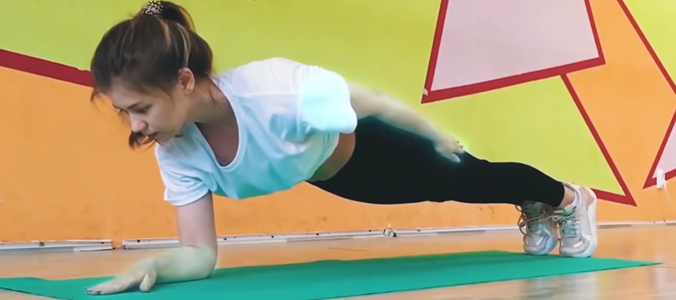
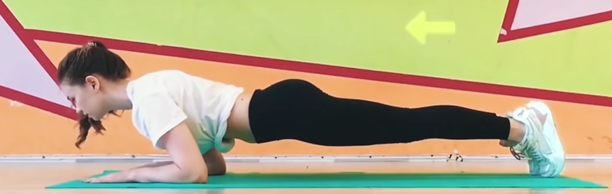

Stay in this position for 30 secs initially and once you are comfortable, start increasing the time to 45 mins - 1 min - 2 min
| Classic Plank |
|
- Lie on the floor, face down, propping your upper body on your hands and your lower body on the tips of your toes.
- Your palms should be planted firmly onto the floor right beneath your shoulders.
- Keep your arms straight and don't crank you neck to look forward - you should be facing the floor as well.
- Your body should form a straight line from the nape of your neck to your heels for the entire duration of the plank.
- The standard plans strengthens your core,abs, and back
|
| Plank Walkdown |
|
- This variation engages not only your core, but also your biceps, As well as your back and abdominal muscles.
- Basically, it is a lot like pushups, only modified to make it easier for bigginers.
- Start in the elbow plank: Your lower body is on tiptoes, but the upper body is propped on your bent elbow. You hands should lie flat on the floor, palms down, and your forearms tense and ready for action.
- Now pull your right arm from the floor and place your palm where your right elbow has just been, right beneath the shoulder. pushing yourself with your right arm, pull your left one and do the same.
- You are now in the standard plank. Now reverse the movements.
- First lower your right forearm back on the floor, then your left one.
- Repeat for 30 secs and gradually increasing the time as you progress.
|
| Tom Cruise Plank or Spiderman plank |
|
- This excecersize is all about training your entire body : shoulders, forearms, calves, thighs, and abs.
- Start in your classic plan position, slowly move your hand and foot to the right and left hand and foot to the left
- Put them as far as you can, and then lower your body to the floor so that you're kind of floating just about it.
- Try to hold the tremor in your core and hold this position for 30 seconds.
|
| Side Plank with foot touching |
|
- This variety is awsome for your sholders, arms and hips.
- Get in to the side plank position
- Lie on your side, propping your upper body on the left forearm, and your feet on top of each other.
- Streach your right arm up towards the ceiling.
- Now swing your right leg up, trying to touch the tips of your toes with the fingers of your outstreaching arm.
- Don't bend it at the knee, and don't let your torso sag to the floor either.
- Do this for 30 secs, then turn on your right side and do it the same with your left arm and leg.
|
| Knee to elbow side plank |
|
- This variety is awsome for your sholders, arms and hips and glutes.
- Get in to the side plank position on your left side and put your right hand behing your head, so that your elbow sticks out towards the ceiling.
- Now bend your right leg at the knee and crunch, reaching your knee to the elbow.
- make sure your core doesn't sag to the floor.
- Do this for 30 secs, then turn on your right side and do it the same with your left arm and leg.
|
| Plank side walk |
|
- Targets mainly your back and sholders.
- Start in the standard plank position and lift both right arm and leg from the floor
- Move them simultaneously to the right plant back to the floor, and move the left leg and arm to the same side.
- Now Make the same crawling movement back, starting with your left arm and leg.
- Make sure your pelvis doesn't go up and keep your body in a straight line all the time.
- Repeat the crawls for 30 secs
|
| One armed plank |

|
- Start in the elbow plank position and lift your left arm off the floor, place it along with your body.
- Propping yourself only on your right forarm.
- Try not to shake and don't let your torso or pelvis rock to the side.
- Keep this position for 30secs (or as long as you can), then repeat with other arm.
- Remember, keeping the form is key.
|
| Plank side jump |
|
- This Excersise works wonders fro your hips, glutes, calves, abs, and back.
- It also acts as a moderately effective cardio exercise, getting your heart rate up, which is always nice.
- Get into the standard or, if you are not yet confident, the elbow plank position.
- Put your feet together and start jumping from side to side, moving your lower body the pelvis down
- Make sure your core remains stable, though, and increase the swing when you feel you could do it.
- Don't jump too high.
- 30 secs should be easy for this excersise, so feel free to extend it as you see it.
|
| Side to Side plank |
|
- Your back, glutes, and thighs will thank you for this rock N roll variety of a plank.
- Getting in the elbow plank position and roll your hip to the side.
- Try touching the floor with your hip before going backup, getback to the centre position, and roll on to the other side.
- Make sure your core doesn't sag or lift, and your feet shouldn't move either, rolling with the rest of your lower body but remaining in their place.
- Continue doing this for 30 seconds.
|
| Leg lifting plank |
|
- This is a mix of planking and strething, which helps you avoid injuries and do some endurance training at the same time.
- Leg lifting plank targets your obliques, glutes, and latissimus dorsi, or the biggest back muscles, nicknamed "LATS".
- Start in the elbow plank position. Keep your legs straight and raise your left leg up, bent only at the foot.
- Stretch untill you feel slight tension in your harmstring and glutes, but don't overdo it.If you feel pain or unplasant sensation, you're probably trying too hard.
- Lower your leg back to the floor and repeat with your right leg. Coninew switching legs for 30 secs.
|
| Plank forward slide |

|
- It trains your calves,abs and biceps.
- Elbow plank is your initial position
- Push your entire body with the tips of your toes so that you slide forward
- and then return to the starting position by pushing back with your forearms.
- It is very important not to let your back arch or sag and to keep your abs tense.
- continue sliding back and forth for 30 secs
|
| Cross-step plank |
|
- Gets your mucles streched while strengthening your core, back and legs.
- Start with a classic plank position
- Now, lift your left leg off the floor, turn your pelvis to the right and try reaching your left knee to the right elbow.
- Return to the initial position and repeat all that with your other side.
|
| PPT plank |
|
- PPT stands for Postirior Pelvic Tilt, bulding a lot of tension in your core, activating your abs like nothing else.
- Start in the elbow plank position
- The thing is, this plank doesn't involve actual movements.
- You should press your forearms and toe tips hard to the floor and pull them together, all the while resisting your core so as not to fold like a book.
- At the sametime squeeze your abs as hard as you can.
- This is your plank position - hold it for 10-15 secs. Relax and repeat after 10 secs
|